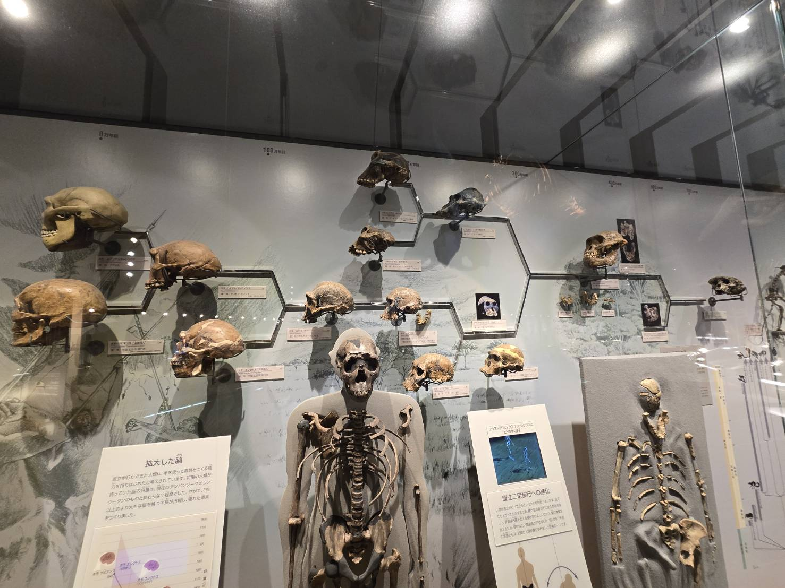
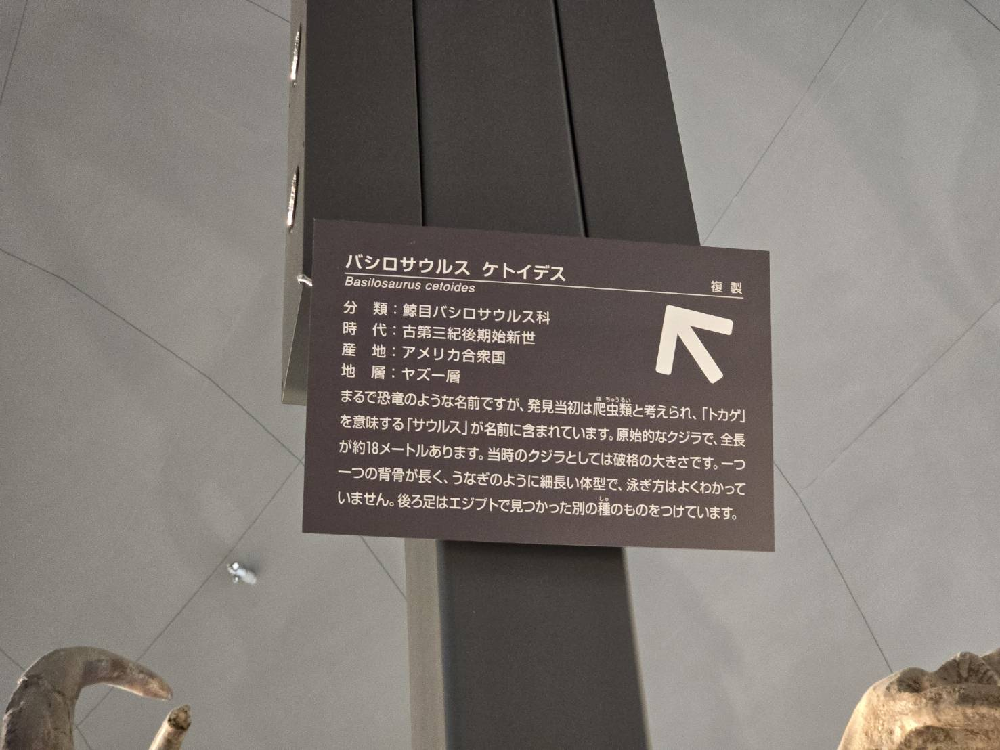
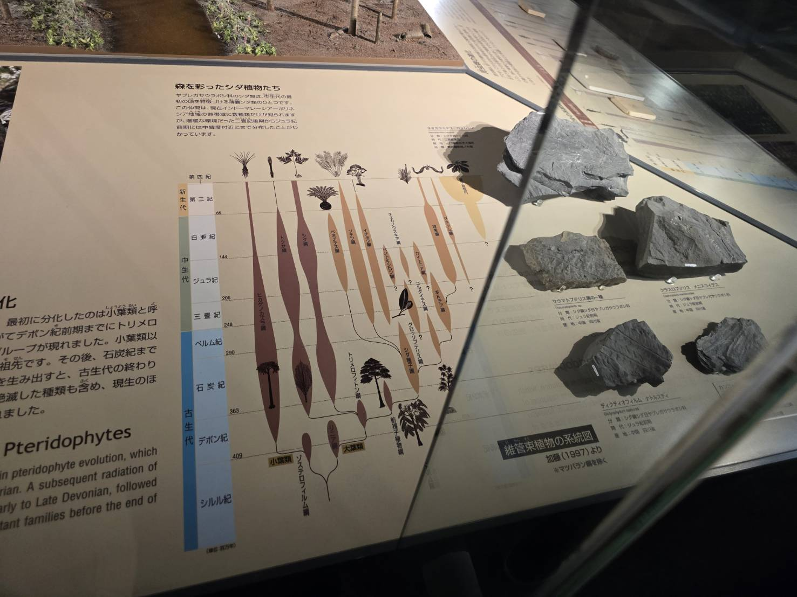
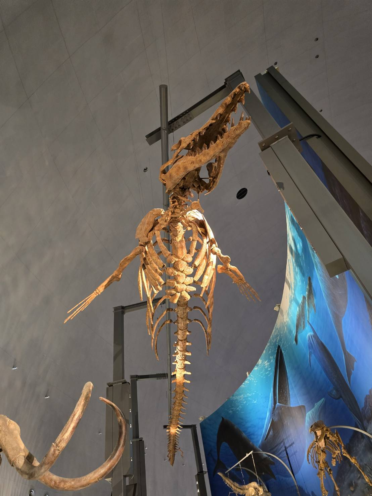

FROM MY PHOTO TO MY KNOWLEDGE
自分が見たものから、
知識を育てる。
一枚の写真を一つの知識に決めつけません。写っている展示物、説明パネル、図表、空間を複数の「観察対象」として整理し、あとから詳しい知識を学び、問題とコレクションへつなげます。
✓ 写真と知識対象を分離
✓ 一枚から複数対象
✓ 詳細知識は後から学ぶ

1 2 3 4

60の観察対象20枚のサンプル写真
THREE CORE VALUES
Your Knowledgeの3つの中心機能
写真を丁寧に整理
複数対象を抽出し、汎用分類から分野別の浅い分類へ段階的に確認します。
知識の整理と拡大
自分が触れた知識と、あとから学んだ知識を区別しながら視覚的に広げます。
問題とコレクション
確認済みの写真・分類・関係から問題を作り、学習の進みを収集状態として残します。
GENERIC FIRST, DOMAIN NEXT
同じ基盤で、さまざまな訪問を整理

STRUCTURED DIALOGUE
自由入力より、
短い確認を積み重ねる。
チャットは会話文を長く書かせる場所ではなく、AI候補を一括承認し、曖昧な部分だけ修正するための操作面として使います。
- 01 写真内の複数対象を確認
- 02 汎用分類を確認
- 03 分野別の浅い分類を確認
- 04 対象同士の関係を確認
PHOTO LIBRARY
訪問の写真
写真は知識対象ではなく、観察したものへつながる入口です。カードには抽出された対象数と整理状態を表示します。
LABELING WORKSPACE
写真を知識の入口にする
一つだけを選ぶ必要はありません。複数の観察対象とその関係を確認します。詳細な年代・大きさ・背景知識はここでは求めません。
現在の訪問—
PHOTO写真を選択
番号を押すと対象を選択
体験のメモです。あとから学んだ知識は、知識マップの「詳しく学ぶ」に書きます。
KNOWLEDGE GRAPH
訪問で見た知識をつなぐ
写真から対象を選び、分類・関係・確認済みの知識を段階的に確認します。
LEARN & REVIEW
知識グラフから問題を作る
この訪問で確認した対象と参照知識から、分類・時代の配置問題を生成します。
LEARNING PATH
知識を育てる3つのストーリー
COLLECTION
集めるのは写真だけではない
「発見 → 整理 → 分類 → 関係付け → 学習」の進みを、テーマごとのコレクションとして残します。
EXPAND TO OTHER PLACES